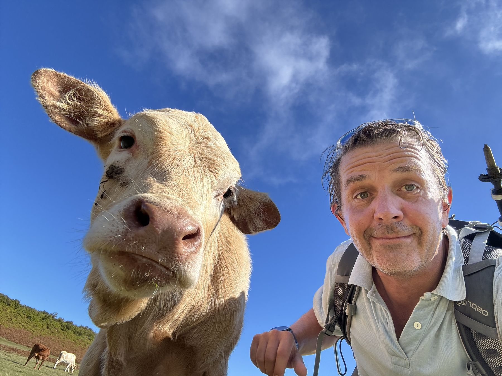
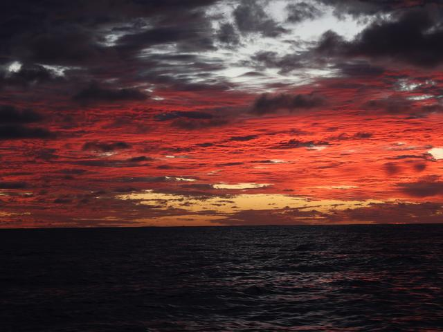

17 januari 2025
Terugblik op deel 1
Zou het een beetje arrogant zijn te denken dat er iemand zit te wachten op hoe ik de eerste zes maanden TG beleefd heb? Ongetwijfeld, maar er zijn vaak mensen die me vragen hoe het al geweest is en ik was zowiezo van plan om het neer te pennen, dus ik gooi het maar meteen on-line ook.
Als ik het in één woord zou moeten samenvatten, is dat niet moeilijk: DANKBAAR.
Voor mijn familie die me ten volle steunt in dit zotte avontuur en me mijn goesting laat doen, op mijn manier. En die ook nog eens mijn grootste on-line fans blijken te zijn...
Voor alle crew die hiervoor een hele brok verlof opofferen en meer dan hun steentje hebben bijgedragen, op vlak van veiligheid, koken, wachten lopen, onderhoud & poetsen, ambiance, maar uiteraard vooral voor de vriendschap en het delen van de momenten van geluk die ik hen allemaal onderweg heb mogen zien beleven.
Voor het feit dat ik / wij dit überhaupt kunnen en mogen. Terwijl ik dit een paar weken geleden schreef, las ik op Whatsapp ook het nieuws over Pim dat ook één en ander in perspectief plaatst. Dankbaar dat we ons dit kunnen veroorloven qua gezondheid, financiën, beschikbare tijd, ...
Voor een boot die zich in alle omstandigheden meer dan een waardige partner voor dit avontuur getoond heeft. Op een paar kleine kwaaltjes na, blijkt Nomad een robuuste, gezellige, snelle en veilige thuis voor onderweg te zijn.
Voor de natuur die het beste van zichzelf heeft gegeven en voorlopig geen al te moeilijke weersomstandigheden op ons losgelaten heeft. En daarnaast dolfijnen, walvissen, zeeschildpadden, prachtige sterrenhemels en zonsondergangen, succesvolle visvangsten en indrukwekkende landschappen vanop zee en vanop land.

Uiteraard was er sprake van een beetje zenuwen bij de start. Er waren voor mij heel wat “eerste keer” dingetjes bij. En dan nog eens 50+ man publiek bij mijn eerste havenmaneuver 😱😉. En dat blijft wel een beetje, die zenuwachtigheid, bij het begin van iedere etappe. Dan ben ik net iets meer “on edge”. Het verdwijnt ook na een paar uur weer opnieuw, dus ik hoop dat de crews hier niet al te veel last van hebben. Heel snel maakt dat gevoel plaats voor een fantastische vibe als ik zie dat de nieuwe crew zich begint te settlen in haar rol & activiteiten. Dat iedereen de boot beter leert kennen en dat het heel duidelijk te merken is hoe iedereen zich aan het ritme van de boot & de zee begint aan te passen. Zalig!
Dus: zenuwen, ja zeker, maar bij iedere etappe een beetje minder omdat ik ook merk dat we er als crew in slagen goed te reageren op alle onvoorziene omstandigheden, wat die ook mogen zijn. Ik weet intussen ook dat Nomad echt gebouwd is voor dit soort werk (en veel meer) en dat we er ook altijd in slagen om eventuele bootproblemen vrij snel te beheersen. En ik vermoed dat ik ook in mijn eigen rol van skipper bij iedere zeemijl iets meer zelfvertrouwen krijg.
Het is fantastisch om te merken hoe iedere crew een unieke club met zijn eigen dynamiek is. Op het vlak van humor, hoe ze onderling communiceren, hoe (pro-)actief ze zijn, waar ze belang aan hechten, op letten, hoe ze met mijn instructies omgaan, hoe woke ik mijn grapjes moet houden,... iedere keer toch wel vrij verschillend. Dat maakt het voor mij ook extra leuk, maar soms ook wel een kleine aanpassingsperiode in het begin om mee te draaien in de groepsdynamiek, zeker als ik vanuit een periode “isolatie” alleen in de jachthaven kom.
Over tegenslagen of dieptepunten kan of moet ik het niet hebben want die zijn er echt nauwelijks geweest. Of je moet een (heel occasionele) zeeziekte of een regenachtige dag al tot die categorie rekenen en zelfs die hebben we bijna niet gekend. Geen veiligheidsissues, geen ziektes of ongevallen, geen substantiële bootproblemen, geen stormen, altijd een happy eensgezinde crew, ... Zelfs de paar dagen windstilte tijdens etappe 4 was bij nader inzien een perfect scenario om deze crew rustig aan het oceaanbestaan te laten wennen. Nu ben ik het wel aan het jinxen...😱
Als ik er toch één zou moeten kiezen, dan is het alle grote, lekkere tonijn die we aan de lijn hebben gehad maar niet binnengehaald omdat het materiaal ondermaats was. Dat wordt dus even shoppen, shoppen, shoppen...
Wat ik wellicht wat onderschat heb, zijn de dagen dat ik voor of na een etappe alleen aan boord ben. Vaak zijn die nodig voor lichamelijke en mentale decompressie, uit te rusten, bootklusjes en de volgende etappe voor te bereiden; en hoewel het leuk is om een (ei)land beter te leren kennen door te hiken / rondrijden / ... is het solo aspect me niet voor lange tijd op het lijf geschreven. Maar goed, mij hoor je niet klagen, er zijn vermoedelijk ergere dingen dan een weekje alleen op een tropisch eiland zitten terwijl het sneeuwregent in België en de rest van de wereld aan het werken is 😁.

We zijn gelukkig nog niet halverwege, maar mijn vakantie in eigen land 😎 tijdens de eindejaarsperiode voelde als een natuurlijke break in de Tournée dus een mooi moment om even terug te blikken. We hebben al meer dan 5.000 mijl afgelegd, er volgen er nog een stuk of 8.000. En die gaan we samen met niet minder dan 38 vrienden en familie kunnen beleven, hoe zalig is dat. Wees maar zeker dat ik van elke mijl, dolfijn, golf, palmboom, zelfgebakken brood, aanlegmaneuver, zonsondergang, 0.0%, verse ceviche, ankerbaai, rijpe banaan, zeeschildpad en crew-momentje met 200% volle teugen ga genieten...